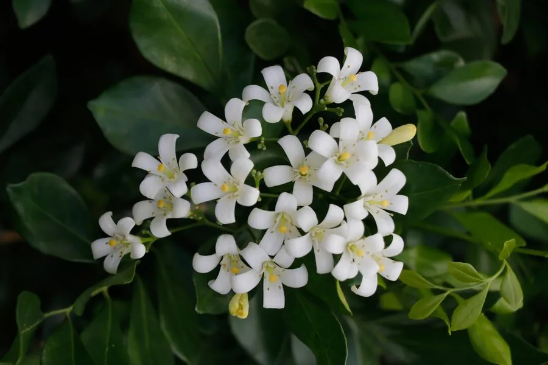

灌木与花木 · 植物界
九里香 Murraya paniculata

叶片芳香、花朵洁白的常绿灌木，香气可传很远，故有“九里香”之名，是华南常见的绿篱与盆景植物。
- 分类
- 门被子植物门纲木兰纲目无患子目科芸香科属九里香属
- 栖息环境
- 海拔 500 米以下的热带亚热带丘陵、灌丛与村旁，喜温暖湿润
- 地理分布
- 中国广东、广西、福建、海南、云南等地，东南亚也有分布
- 保护级别
- 暂无评估；中国未列入国家重点保护野生植物名录
物种志
九里香为常绿灌木或小乔木，高可达 8 m，分枝多，小枝灰白色；奇数羽状复叶互生，小叶 3–7 枚，倒卵形或椭圆形，表面深绿光亮，揉碎后有柑橘类香气。花期 4–8 月，聚伞花序顶生或腋生，花白色、芳香浓郁，花径约 2 cm，花瓣 5 枚；果实为浆果，卵形或球形，成熟时橙红至朱红色，内含 1–2 粒种子。
九里香原产中国华南、西南及东南亚，喜温暖湿润、光照充足，不耐寒，适宜疏松肥沃、排水良好的微酸性土壤。因花香气浓郁、枝叶常绿，常被用作绿篱、庭院观赏与盆景材料，岭南盆景中尤以九里香为传统树种；根、叶与花可入药，有行气止痛、活血散瘀之效，但用量需谨慎。木材细致，可作雕刻与小器具，华南地区也常将其栽于门前以取吉祥之意。
形态与习性
- 株高可达 8 m，分枝多
- 花期4–8 月，花白色、芳香浓郁
- 果期9–12 月，浆果橙红色
- 光照喜光，不耐长期荫蔽
- 水分喜湿润，怕积水
- 土壤微酸性、疏松肥沃的壤土
- 主要用途绿篱、庭院观赏、岭南盆景、根叶入药
趣味知识
- 九里香花朵洁白、香气浓郁，古人说其香可传九里，故得名。
- 九里香的叶片揉碎后有柑橘香气，是芸香科植物的典型特征。
- 九里香是岭南盆景的传统树种，枝干苍劲、叶片常绿，适合造型。
- 九里香的果实成熟时橙红至朱红色，成串挂在枝头，观赏期很长。